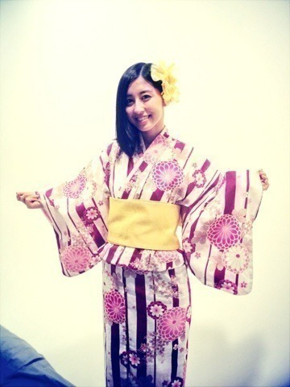

| 2013/07 09 Tue | 勉強モードっ キリ ッ(´>∀<｀)ゝ |
やほやほ(*´ｰ`*人)
絶賛テスト中。なう。
あと２日っ！！！
ここは折り返し地点だわよー
がんばりどきよー
イエス。ファイティングウーマン。
(●´-` ●)(●´-` ●)(●´-` ●)
遅くなったけど名古屋握手会！
来てくれて、ほんっとにありがとう。
久しぶりだったから忘れてました(´･-･`)
この楽しさ！嬉しさ！感謝！
個別行くね(*´ｰ`*人)
っていってくれる方も増えて、
ほんとに嬉しい限り...(*/ω＼*)

心から、待ってます！！！
どきどきの抽選で決めたレーン♪
真夏とまあやヾ(*･∀･*)ﾉﾞ
異色すぎるヾ(*･∀･*)ﾉﾞ笑笑
唯一の３人レーンだったから
にぎやかだったんじゃないかな

楽しかったよ！
ありがとー( ´ ▽ ` )ﾉ
(●´-` ●)(●´-` ●)(●´-` ●)
乃木坂の、の！！！
ずーとりんごと

聞いて頂けましたでしょうか？？？
自分で聞いてみたんだけども
声、ちっちゃかったのかな...
それとも素の声だったから低かったのかな...
理由はわからんけども
自分の声が、ワカラナイ！！
ダレコレ！！！ってなった！！！
辛うじて、ずー喋ってない、りんご喋ってない、あ、じゃあうちか。
みたいなノリになってしまっている自分がいた！！！
なんてこった！！！
次への、課題。ですな。(￣ー￣)
でも、とても、素で、楽しくて、びっくりしました( ´ ▽ ` )ﾉ♡
ゆうとくけどあたしは16歳よ。( ´ ▽ ` )ﾉ笑
(●´-` ●)(●´-` ●)(●´-` ●)
最後に宿題！
これだーれだっ？？
(●´-` ●)(●´-` ●)(●´-` ●)
最近、ハイタッチが好きみたい。
うぇーい！
たーっち！！
的な、ノリね

うぇーい！
今回のブログは短めっ
写真多めっ(同じアングルで申し訳ない)
(ほぼすっぴん髪ぼさぼさで申し訳ない)
ちょっといつもと違うめっ
( ´ ▽ ` )ﾉ
たまには、いいよね( ´ ▽ ` )ﾉ
許してね( ´ ▽ ` )ﾉ
はい。数学のワークやってきます。
勉強モードっ
 キリッ
キリッ
キリッ
でも最後はお祭り気分( ´ ▽ ` )ﾉ

浴衣( ´ ▽ ` )ﾉ
ばいるんっ
るんるんっ
ちはるんっ
(´>∀<｀)ゝ
コメント(140)
2013/07/09 20:42